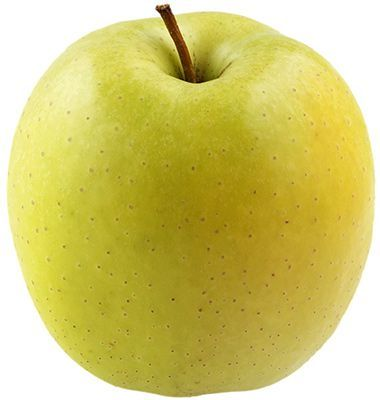

Яблоки Голден
Американский сорт яблок, ставший одним из самых популярных в мире. Желтые плоды среднего размера аккуратной правильной формы, матовые, с нежной кожицей, очень сладкие, ароматные и сочные. Хороши в свежем или запеченном виде, а также во многих десертах.
| Цвет плодов: | желтый |
| Высота дерева: | до 2,5-3 м |
| Вес плодов: | до 200гр |
| Вкус (сладкий, кислый и тд): | сладкий |
| Время созревания : | октябрь |
| Срок созревания | зимний |
| Срок хранения | 5-6 месяцев |